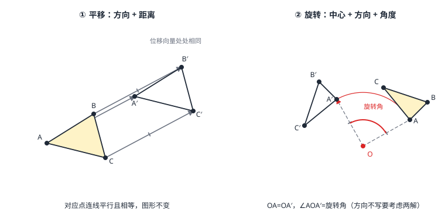

平移与旋转
平移与旋转是图形的两种「原样搬运」：平移由「方向 + 距离」两要素决定，图形沿同一方向挪同一距离——对应点连线段平行（或共线）且相等，对应线段平行且相等；旋转由「中心 + 方向 + 角度」三要素决定，图形绕定点转过同一角度——对应点到中心的距离相等，对应点与中心连线的夹角都等于旋转角。连同轴对称，三者都保持形状与大小（全等变换）。平移像电梯，旋转像摩天轮；辨认性质、作图、计算弧与弦，全靠这两组要素。
| 所属主题 | 图形与变换 |
|---|---|
| 所属模块 | 几何 |
| 课标学段 | 第四学段（7~9 年级） |
| 前置知识 | 全等三角形、轴对称与中心对称 |
| 核心素养 | 几何直观推理能力空间观念 |
教材定位
人民教育出版社《人教版（2024版）义务教育教科书·数学》
九年级上册第28章 旋转28.1 图形的旋转28.2 中心对称
对应九上 28.1 与 28.2：旋转的三要素与性质在 28.1，中心对称在 28.2。平移在七下 7.4 已出现，本篇把它与旋转并成「全等变换」家族。
说明
平移的定义：在平面内，将图形上所有点沿同一个方向移动同一段距离。两要素——方向与距离（缺一不可：只说「移动 3 厘米」不算平移，没有方向；只说「向右」也不算，没有距离）。平移由连接一对对应点的有向线段完全决定：A\to A' 定了，其余点各自走一模一样的位移。
平移的性质：对应点连线段平行（或共线）且相等（图 1 左）；对应线段平行且相等；对应角相等——图形的形状、大小、朝向都不变，只有位置变了。像电梯：里面的人不管站哪，整体同步升降。
旋转的定义：在平面内，将图形绕一个定点 O 转过一个角 \alpha。三要素——旋转中心、旋转方向（顺/逆时针）、旋转角。O 是全场唯一的「不动点」：旋转中心自己原地不动。
旋转的性质：对应点到旋转中心的距离相等；对应点与旋转中心连线的夹角（即 \angle POP'）都等于旋转角；对应线段相等、对应角相等（图 1 右）。中心对称是它取 \alpha=180^\circ 的特例（轴对称与中心对称）。平移、旋转、轴对称合称全等变换——三种都不改变图形的形状与大小。
使用场景
传送带与自动扶梯：包裹、扶梯上的乘客被整体平移——每人位移的方向与距离完全相同，扶梯两端的「人形队列」是平移前后的两个全等图形。
摩天轮与风车：座舱、叶片绕固定轴心旋转——每个座舱到轴心距离不变，转过的角度同步；风车叶片从迎风转到侧向，就是一次确定中心与旋转角的旋转。
注意点
「旋转方向」不写就有双解：题目说「绕 O 旋转 60^\circ」而未指明顺时针或逆时针，两个像都合法，要分别画出或讨论——漏掉逆时针解是旋转题最常见丢分点。
旋转角是「对应点与中心连线的夹角」，不是图形上任意两条边的夹角：\angle AOA'=\angle BOB'=\angle COC'=\alpha，但 \angle AOB 未必等于 \alpha。找旋转角，先找中心与一对对应点。
平移「两要素」缺一不可，且平移不改变方向：图形经过平移后没有「转过来」一说——若新图形相对原图有偏转，那一定不是平移（是旋转或平移加旋转）。
证明

图 1：左——平移两要素：每个点走同方向、等距离，对应点连线平行且相等；右——旋转三要素：每个点绕中心转同方向、同角度，到中心的距离不变
证明
结论 1平移保持线段的长度和方向：AB\parallel A'B' 且 AB=A'B'。
设平移把 A\to A'、B\to B'。按定义，AA' 与 BB' 同向等长——四边形 ABB'A' 的对边 AB 与 A'B' 也同向等长（每一点位移相同，B 相对 A 的位置向量在移动前后不变），所以 ABB'A' 是平行四边形（平行四边形 判定），得 AB\parallel A'B' 且 AB=A'B'。
关键一步依据是平行四边形的判定（平行四边形）：平移按定义使 AA' 与 BB' 同向等长，四边形 ABB'A' 的这组对边平行且相等，所以它是平行四边形，平行四边形的另一组对边 AB 与 A'B' 也平行且相等。原文那句「每一点位移相同」是关键——B 相对 A 的位置在移动前后不变，才敢断定这个四边形是平行四边形。
结论 2平移保持角度，平移前后的图形全等。
角由两条射线的方向决定；两条射线被同步搬运后方向都不变（每条线段仍与原线段平行），夹角自然不变。于是平移前后的图形全等——「电梯里的人形」前后能完全重合。
关键一步依据是角的大小只由两条射线的方向决定：平移后每条线段仍与原线段平行（上一条的结论），方向没变，两条射线的夹角自然不变；再配上长度也不变，对应边、对应角都相等，图形全等——「电梯里的人形」前后能完全重合就是这个道理。
结论 3旋转保持到旋转中心的距离：OA=OA'、OB=OB'。
旋转是绕 O 的刚体转动，A 走过的轨迹是以 O 为圆心、OA 为半径的圆弧，半径全程不变，故 OA=OA'。同理 OB=OB'。
关键一步依据是旋转中「到中心的距离」这一条不变量：点 A 沿以 O 为圆心、OA 为半径的圆弧移动，这个半径就是它到 O 的距离，全程不变，落到 A' 上自然有 OA=OA'；B 同理。这是后面用 SAS 判定旋转前后图形全等的前提。
结论 4同一个旋转里所有点转过的角度都相等：\angle AOA'=\angle BOB'=\alpha，且旋转前后的图形全等。
设旋转把 A\to A'、B\to B'。\triangle OAB 与 \triangle OA'B' 中 OA=OA'、OB=OB'；把 \triangle OAB 绕 O 转 \alpha 恰落在 \triangle OA'B' 上（这就是旋转的定义），两边一夹角全等（\mathrmSAS，全等三角形），故 \angle AOB=\angle A'OB'、AB=A'B'。于是 \angle AOA'=\angle BOB'=\alpha（各等于 \angle AOB+\angle BOA' 型的同一圈角），对应线段相等、图形全等。
关键一步依据是 SAS 判定（全等三角形）：OA=OA'、OB=OB' 由半径不变给出，把 \triangle OAB 绕 O 转 \alpha 恰落在 \triangle OA'B' 上（这正是旋转的定义），两组边相等加夹角相等，三角形全等，于是 \angle AOB=\angle A'OB'、AB=A'B' 随之得出。\angle AOA'=\angle BOB' 则由「同一圈上的和」得出：\angle AOA'=\angle AOB+\angle BOA'，\angle BOB'=\angle BOA'+\angle A'OB'，而全等已给出 \angle AOB=\angle A'OB'，两个式子的右边相等，故 \angle AOA'=\angle BOB'=\alpha。
动手实验
在纸上画一个三角形并标出三个顶点。用三角板推着描图整体向右上方移动 4 厘米，在新位置描出第二个三角形——连 AA'、BB'、CC'，量一量：三条线段都约 5 厘米（沿 45^\circ 方向移动 4 厘米+4 厘米，位移长 \sqrt4^2+4^2）、互相平行；再比较两个三角形的边与角，全部相等。然后换一张纸，在纸外按一个图钉当中心 O，把描图纸绕图钉顺时针转 70^\circ 再描一遍——量 OA 与 OA'：相等；量 \angle AOA'、\angle BOB'：都约 70^\circ。
解题思路
作平移图形：任选一对对应点定出「位移箭头」，其余每个顶点各画同向等长的箭头得新顶点，顺次连接。
作旋转图形：连「顶点—中心」；用量角器以中心为顶点、按指定方向转出旋转角；在新射线上截取「到中心等距」定新顶点；顺次连接。旋转中心给在图形内部、外部、顶点上做法相同。
算旋转弧与弦：点 A 绕 O 转 \alpha 走过的弧长 =\tfrac\alpha360^\circ× 2π r（r=OA，弧长公式见 弧长、扇形面积与圆锥）；旋转 90^\circ 时弦 AA' 与两半径围成等腰直角三角形，AA'=\sqrt2 r（勾股）。
按场景的例题
例 1（场景：生活优化） 传送带上的图案定位
分拣线上图案 \triangle ABC 随传送带平移得 \triangle DEF（A\to D，B\to E，C\to F）。已知 AB=5，AC=7，\angle BAC=40^\circ，位移 AD=6。求 DE、DF、\angle EDF 与 CF。
解：平移保持边与角：DE=AB=5，DF=AC=7，\angle EDF=\angle BAC=40^\circ。对应点连线段平行且相等：CF 与 AD 是同一平移的两组对应点连线，故 CF\parallel AD 且 CF=AD=6。
答：DE=5，DF=7，\angle EDF=40^\circ，CF=6。
例 2（场景：物理情境） 风车叶片的旋转轨迹
风力发电机的一片叶片尖点 A 距轮轴中心 O 为 8 米。叶片从某位置绕 O 顺时针旋转 90^\circ，A 转到 A'。求 A 划过的弧长与弦 AA' 的长（π 保留符号，结果可含根号）。
解：弧长（弧长、扇形面积与圆锥）：\ell=\tfrac90^\circ360^\circ× 2π× 8=4π（米）。弦长：\angle AOA'=90^\circ（旋转角），OA=OA'=8（旋转性质），\triangle AOA' 是等腰直角三角形，勾股得 AA'=\sqrt8^2+8^2=8\sqrt2（米）。
答：弧长 4π 米；AA'=8\sqrt2 米。
例 3（场景：竞技与游戏） 直升机螺旋桨标记点
特技表演中，直升机悬停，螺旋桨上的标记点 P 绕轴心 O 逆时针旋转 90^\circ 到 P'，OP=5 米。取 PP' 的中点 M，求 PP' 与 OM 的长。
解：\angle POP'=90^\circ，OP=OP'=5，\triangle POP' 为等腰直角三角形：PP'=\sqrt5^2+5^2=5\sqrt2（米）。\triangle POP' 又是直角三角形、PP' 为斜边，斜边上的中线等于斜边一半（90^\circ 圆周角模型，圆的概念与垂径定理 的「半圆藏直角」反过来用）：OM=\tfrac12 PP'=\tfrac5\sqrt22（米）。（另一条路：等腰三角形三线合一，OM 平分顶角且垂直底边，在 \triangle OPM 中用 \angle POM=45^\circ 的勾股同样得解。）
答：PP'=5\sqrt2 米，OM=\tfrac5\sqrt22 米。
常用推论
旋转 90^\circ 配勾股是常见搭档：\angle AOA'=90^\circ、OA=OA'=r 立得 AA'=\sqrt2 r；再取中点就得 \tfrac\sqrt22r——记住这对数字，许多旋转计算题不用重新推（例 2、例 3 全靠它）。
平移可以把「分散的条件」搬家：一条相等的边、一个相等的角被平移到新位置后仍相等——后面用变换解几何题（动点与最值问题（将军饮马·隐圆） 的将军饮马正是「平移/对称搬运线段」的巅峰应用）的底层逻辑就是「全等变换不变性」。
中心对称图形（轴对称与中心对称）是旋转周期为 180^\circ 的图形；推广开去，绕中心每转 \tfrac360^\circn 与自身重合的图形叫 n 次旋转对称图形——正 n 边形都是（正三角形 n=3、正方形 n=4、圆 n 无穷）。
易错点
错平移后 \triangle DEF 的对应点连线 AD、BE、CF 相等，但不一定平行。
为什么错定义要求所有点沿同一方向移动同一距离——位移向量相同，连线自然平行且相等。若三线只相等不平行，那是「三点各自移动」，图形早已散架。
正确AD\parallel BE\parallel CF 且三线段相等。
错绕 O 旋转 60^\circ 的图形只有一个。
为什么错未指明方向时，顺时针与逆时针各得一个像（题目常常默认逆时针，但严格题意要两种都考虑）。
正确「旋转 60^\circ」不写方向就有两个对称解；写明「顺时针旋转 60^\circ」才唯一。
错点 P 绕 O 旋转后到 P'，则 PP'=OP。
为什么错PP' 是弦、OP 是半径，两者只在旋转角为 60^\circ 时恰好相等（\triangle POP' 成为等边三角形）。旋转角是 90^\circ 时 PP'=\sqrt2 OP。一般角下弦与半径的关系需要更进一步的工具（m2-07 用特殊角的边比来处理）——初中旋转计算只考 60^\circ、90^\circ 等特殊角。
正确先看旋转角定三角形的形状，再由勾股求弦；勿默认弦等于半径。
直观理解
平移是「电梯」，旋转是「摩天轮」：电梯里所有人同步位移，人形前后能完全重合——形状、大小、朝向一个不变（图 1 左那三条平行等长的箭线就是每个人的「行程单」）；摩天轮上所有座舱绕同一个轴心转同一个角度，到轴心的距离谁都不变（图 1 右那一对等长的半径与中间的弧线箭头就是「行程单」）。对称（轴对称与中心对称）讲「翻面」，这里讲「平挪」与「打转」——三件工具都不改变图形本身，改变的只是它在平面上的住址与朝向，所以它们统称全等变换：搬运不变性，是后面一切「变换解题」的底气。